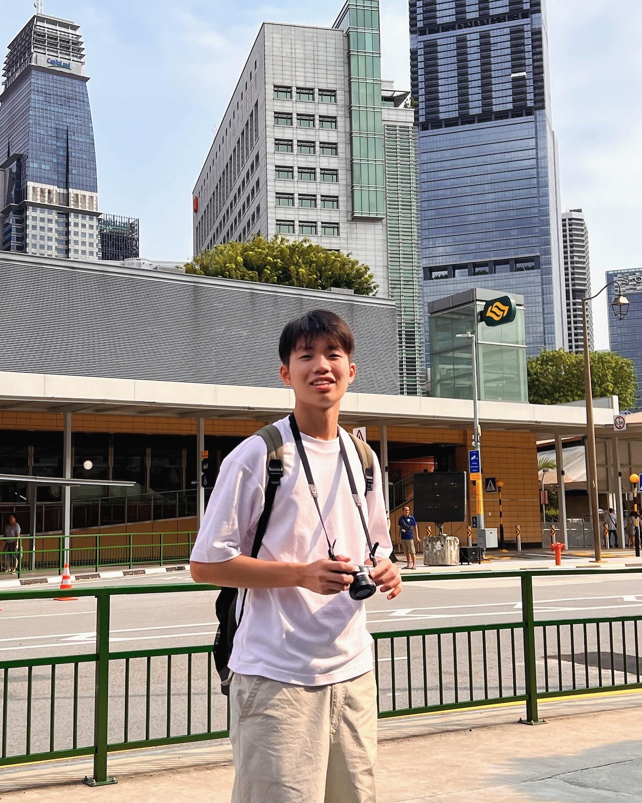

Choo Yi Ken

Biography: What's up!
Personal Details
Hi, these will be my personal details about myself
- Full name: Choo Yi Ken
- Salutation: Mr.
- Email: e.yiken@gmail.com
- Date of Birth: 24 JUL 2003
- Gender: Male
- Nationality: Malaysian
- Address:
- Malaysia: 27D1-10-7, Miharja Condo, Taman Miharja, Jalan Palong, 55200 Kuala Lumpur
- Singapore: 3C-03-04S, NTU Hall of Residence 3, 52 Nanyang Walk, 639928 Singapore
- Contact H/P:
- Malaysia: +60-162198700
- Singapore: +65-88646563
Education Background
Public examination performance
Awards and Certificates
sorted according to year obtained
- 2014 IMAS --- Credit
- 2014 IBT Mathematics --- High Distinction
- 2014 ICAS Mathematics --- Credit
- 2015 APMOPS ---Silver Award (7th in KL)
- 2015 SASMO ---Bronze Award
- 2015 KMC Round 1 ---Honourable Mention
- 2015 AMC ---Credit
- 2015 ICAS Mathematics ---Distinction
- 2016 ICAS Mathematics ---Distinction
- 2016 ICAS Science ---Credit
- 2016 ICAS English ---Merit
- 2017 SASMO ---Bronze Award
- 2017 KMC Round 1 ---Silver Award
- 2017 ASMO State ---Merit
- 2017 ICAS Science ---Credit
- 2017 ICAS Digital Technologies ---Merit
- 2018 华罗庚数学比赛 ---Participation
- 2018 KMC Round 1 ---Silver Award
- 2018 AMC ---Distinction
- 2018 ICAS Mathematics ---Distinction
- 2018 ICAS Science ---Merit
- 2018 陈景润数学比赛 ---High Distinction (70th in Malaysia)
- 2018 ASMO STate ---Gold Award
- 2019 KMC Round 1 ---Gold Award
- 2019 KMC Round 2 ---Distinction
- 2019 ASMO State ---Silver Award
- 2019 ASMO National ---Silver Award
- 2019 AMC ---Credit
- 2019 陈景润数学比赛 ---High Distinction (27th in Malaysia)(4th Group)
- 2019 厦门大学数学比赛 ---Bronze Award
- 2019 ICAS Mathematics ---High Distinction
- 2019 ICAS Science ---Distinction
- 2019 OMK ---Sanjungan Kehormat
- 2019 Beaver Computational Thinking ---Honourable Mention
- 2020 SASMO ---Silver Award
- 2020 KMC ---Gold Award
- 2020 IMU Science Discovery Challenge ---Grand Finalist
- 2020 ASMO School ---Merit
- 2020 陈景润数学比赛 ---High Distinction (29th in Malaysia)(3rd Group)
- 2020 K3M ---High Distinction
- 2021 KMC ---Gold Award
- 2021 陈景润数学比赛 ---High Distinction (40th in Malaysia)(2nd Group)
- 2021 MIMAS ---Bronze Award
- 2021 SASMO ---Silver Award
- 2021 OMK ---Saguhati
- 2021 ICAS Mathematics ---Distinction
- 2021 ICAS Science ---Distinction
- 2021 厦门大学物理比赛 ---Commendation Award
University Grades
Contact Me!